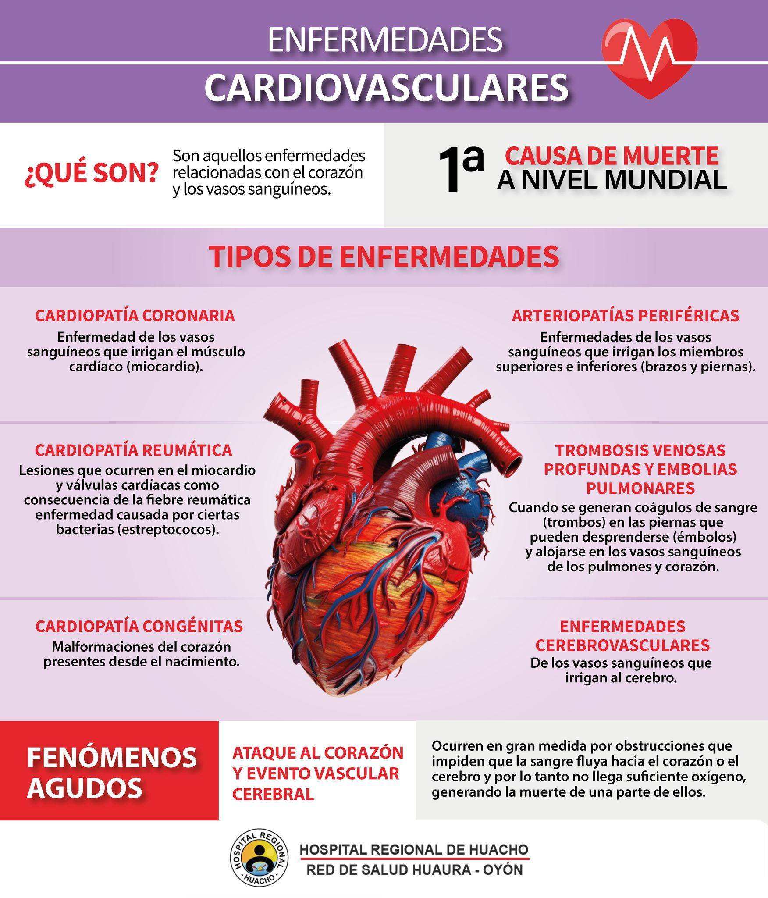
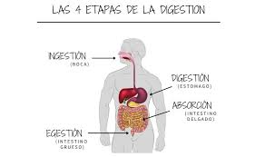
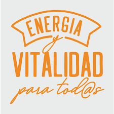
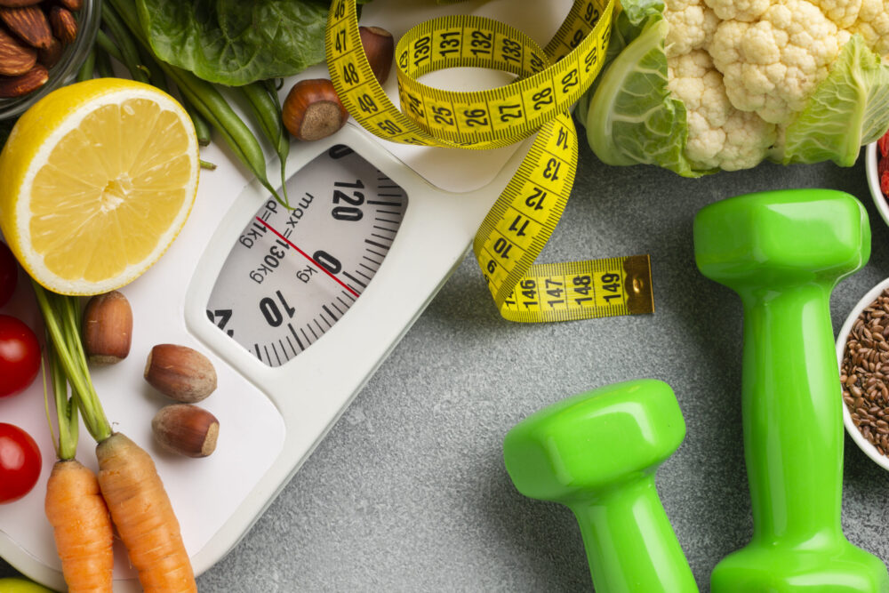

Beneficios del Veganismo
Impacto en la Salud

Reducción del riesgo de enfermedades cardiovasculares

Mejora de la digestión

Aumento de la energía y vitalidad

Control del peso corporal
Adoptar una dieta vegana puede tener múltiples beneficios para la salud, como la reducción del riesgo de enfermedades crónicas, una mejor digestión, y un mayor nivel de energía. Además, puede contribuir al control del peso corporal y promover una vida más saludable en general.